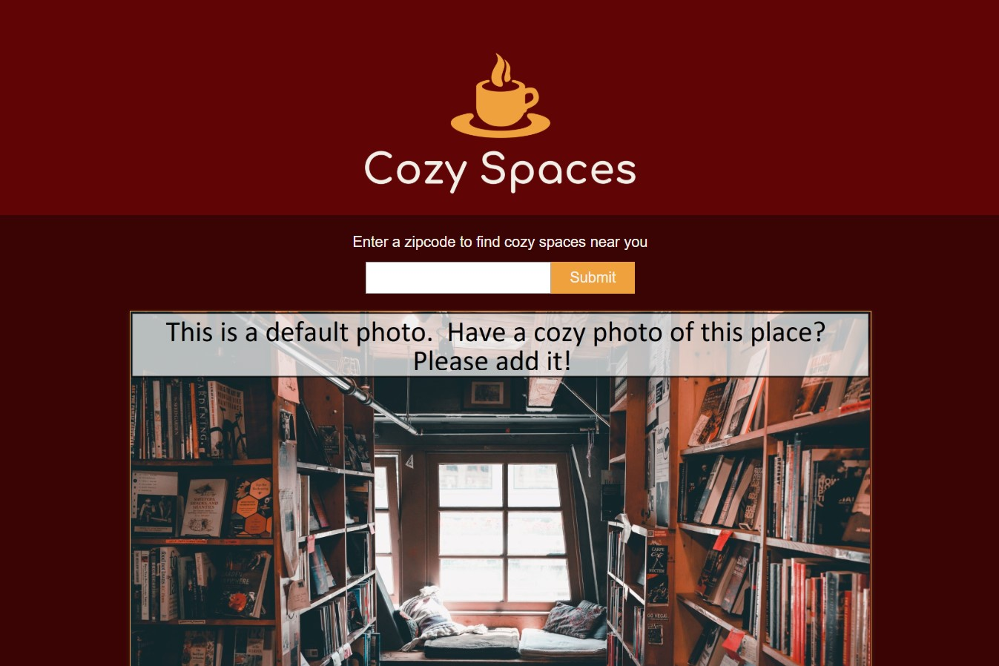

Hi, my name is Burke Koontz. I'm a web developer who's well-versed in MongoDB, Express, React/Redux, and Node.js. In my spare time, I enjoy being intensely critical of and completely enamored with pop culture and mass media. My current obsessions are Red Dead Redemption 2, fact-checking in the internet era, and determining the best Coen Brothers' movie. I am a proponent of creating tech that solves urgent, necessary problems and also respects people's time and attention
My resume is located here
Projects
-
Cozy Spaces
Looking for a public space to warm up in the fall and winter months? Does your local coffee shop just not cut it with
-
second project
-
third project
linkedin and shit